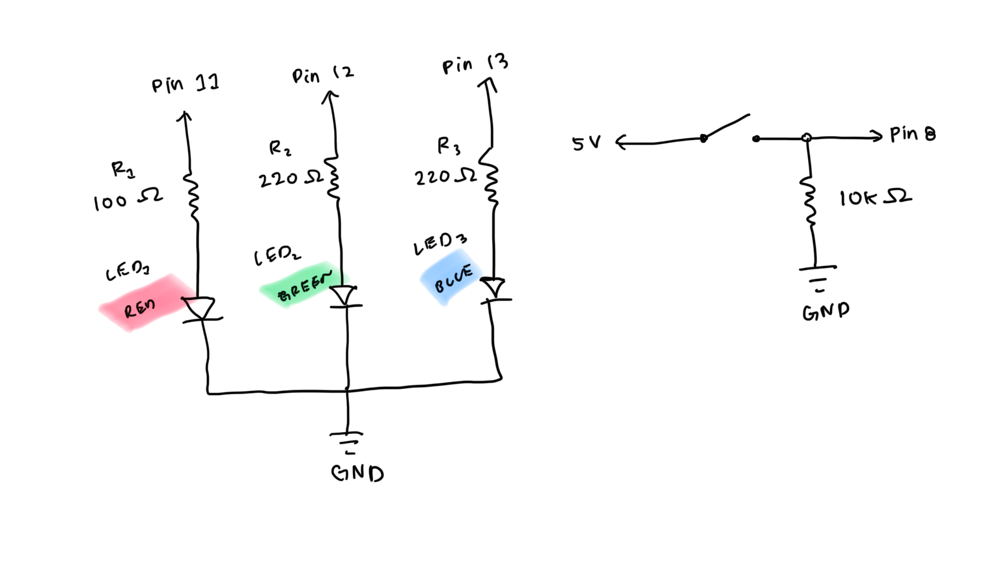
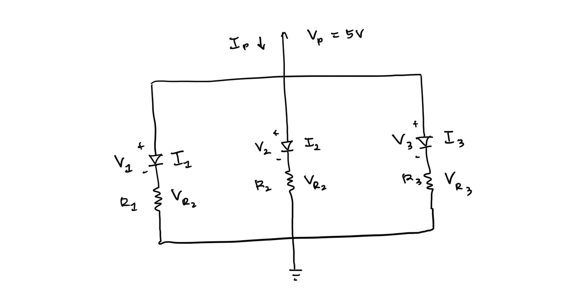
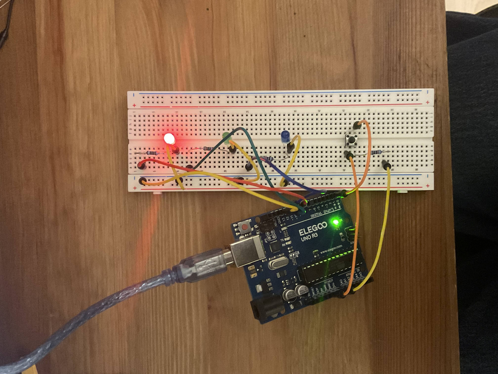
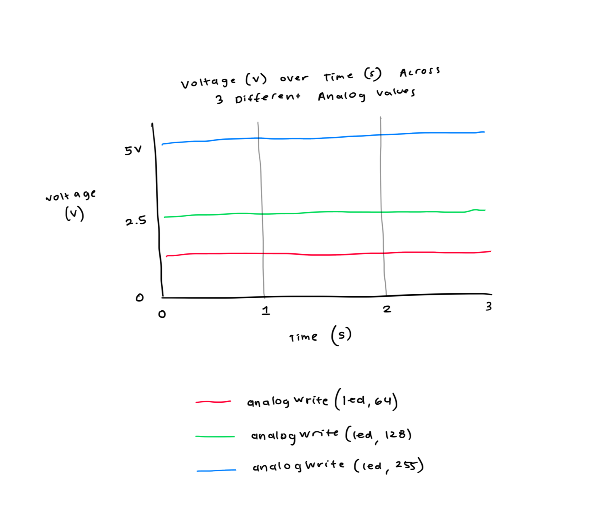

Circuit Operation

Here is all the documentation for assignment 2!
You work for a toy company, and the chief innovation officer wants you to make a prototype for a new light-up toy.



// pin that button is connected to
const int buttonPin = 2;
// pin for red LED (PWM, used for fading)
const int ledRed = 11;
// pin for green LED (digital)
const int ledGreen = 12;
// pin for blue LED (digital)
const int ledBlue = 13;
// how bright the fading LED is (0-255)
int brightness = 0;
// how much to fade the brightness by, each step
int fadeAmount = 5;
// setup runs once when the Arduino powers on or resets
void setup() {
// set the button pin as an input to read it!
pinMode(buttonPin, INPUT);
// declare pin 11 (red LED) to be an output
pinMode(ledRed, OUTPUT);
// declare pin 12 (green LED) to be an output
pinMode(ledGreen, OUTPUT);
// declare pin 13 (blue LED) to be an output
pinMode(ledBlue, OUTPUT);
}
// loop runs over and over forever
void loop() {
// read button: HIGH when pressed, LOW when released
int buttonState = digitalRead(buttonPin);
// list of LED pins for for loop to run through
int ledPins[3] = {ledRed, ledGreen, ledBlue};
// check if button is being pressed
if (buttonState == HIGH) {
// for loop
for (int i = 0; i < 3; i++) {
// turn current LED on
digitalWrite(ledPins[i], HIGH);
// delay to keep light on visibly
delay(100);
// turn current LED back off
digitalWrite(ledPins[i], LOW);
}
// for loops runs backwards
for (int i = 2; i >= 0; i--) {
// turn current LED on
digitalWrite(ledPins[i], HIGH);
// delay to keep light on visibly
delay(100);
// turn current LED back off
digitalWrite(ledPins[i], LOW);
}
}
// do the fade
else {
// make sure green LED is off
digitalWrite(ledGreen, LOW);
// make sure blue LED is off
digitalWrite(ledBlue, LOW);
// set red LED to current brightness
analogWrite(ledRed, brightness);
// update brightness for next time
brightness += fadeAmount;
// reverse fade direction at ends of fade:
if (brightness <= 0 || brightness >= 255) {
// reverse fade direction
fadeAmount = -fadeAmount;
}
// make fade visible + smooth
delay(30);
}
}

I could technically try to blink 13 LEDs, one for each pin in the Arduino. But that would probably draw ~260 mA of current, which exceeds the maximum total current, which would burn out the Arduino. So I can actually only blink 9 LEDs safely, which would draw ~180 mA.
I did use AI tools. I used Claude to refresh my memory on how to write HTML. It gave me more information than I needed, so I just used it for formatting. Everything else is my own thinking. It was helpful for verifying that my calculations were correct.